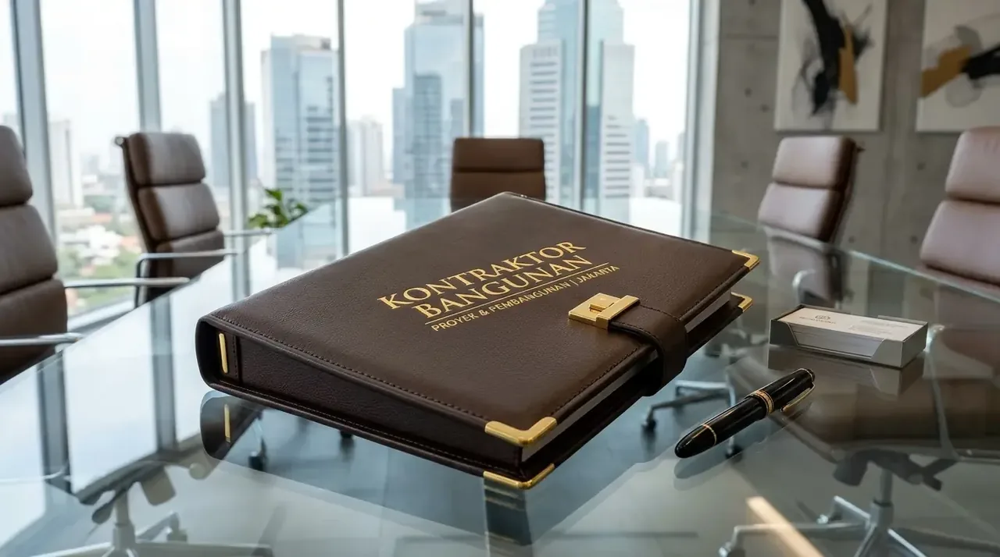

Berapa Estimasi Biaya Pengadaan Besi Beton SNI Grosir di Malang?
Estimasi biaya pengadaan besi beton SNI grosir di Malang sangat bergantung pada jenis baja (polos BjTP vs ulir BjTS) dan tonase total yang dipesan untuk kebutuhan proyek.
Berdasarkan Index Harga Bahan Bangunan Jawa Timur 2025/2026, harga rata-rata besi beton SNI grosir berkisar pada angka yang sangat kompetitif per kilogram untuk pemesanan skala tonase. Skema pembelian grosir ini mampu memangkas total anggaran material struktur hingga 10%–14% dibanding harga pasar eceran toko lokal.
Membuat perencanaan anggaran pembelian bersama penyedia material resmi memastikan alokasi dana proyek tetap berada dalam batas toleransi finansial perusahaan Anda.
- Rumus Berat Nominal Besi SNI: Berat (kg/m) = 0.006165 × (Diameter dalam mm)².
- Contoh Besi Ulir D16 (Panjang 12m): 0.006165 × 16² × 12 m ≈ 18.94 kg per batang.
- Menghitung total tonase secara detail memungkinkan Anda memperoleh tarif grosir pabrik per kilogram secara akurat.
Faktor Apa yang Memengaruhi Total Biaya Pengadaan Besi Beton?
Faktor yang memengaruhi total biaya pengadaan besi beton meliputi fluktuasi harga baja mentah dunia (*billet steel*), variasi diameter besi, serta biaya logistik pengiriman armada berat.
Dalam kalkulasi Rencana Anggaran Biaya (RAB), komponen pengeluaran terbagi atas:
- Jenis dan Ukuran Diameter: Besi ulir (*BjTS 420B*) umumnya memiliki nilai investasi sedikit lebih tinggi dibanding besi polos (*BjTP 280*) karena proses manufaktur pengerolan panas (*hot rolling*) dan pengujian sirip mekanis yang lebih kompleks.
- Volume Tonase Pemesanan: Semakin besar volume pemesanan dalam satu alokasi pengiriman (misalnya di atas 10 ton), semakin rendah biaya satuan per kilogram yang diperoleh dari distributor resmi.
- Jarak dan Aksesibilitas Lokasi Proyek: Biaya angkut armada tronton atau fuso ditentukan oleh jarak gudang pusat ke titik proyek di Kota Malang, Kepanjen, Singosari, hingga Kota Batu, serta ketersediaan akses jalan untuk manuver armada berat.

Pengadaan material besi beton harga pabrik langsung dari gudang logistik memastikan anggaran konstruksi gedung kantor dan komersial tetap efisien.
Bagaimana Cara Menghemat Anggaran Pengadaan Material Gedung?
Menghemat anggaran pengadaan material gedung dilakukan melalui penjadwalan pemesanan kolektif dan penguncian harga kontrak pembelian jangka panjang bersama penyedia terpercaya.
Beberapa strategi praktis untuk menekan biaya pengadaan tanpa mengorbankan mutu bangunan meliputi:
- Pemesanan Paket Per Indeks Tahapan Konstruksi: Kelompokkan pemesanan besi beton berdasarkan tahapan pengecoran struktur (misal: tahap fondasi sloof, tahap kolom lantai 1, dak lantai 2) untuk mengoptimalkan kapasitas muatan armada angkut.
- Kunci Harga Melalui Kontrak Induk (*Fixed Price Agreement*): Gunakan kesepakatan kontrak pasokan harga tetap dengan distributor untuk melindungi proyek dari lonjakan inflasi harga baja di pasar regional.
- Optimalkan Bar Bending Schedule (BBS): Buat perencanaan pemotongan dan pembengkokan besi yang presisi oleh tim engineer Kontraktor Bangunan agar limbah sisa potongan material (*scrap waste*) ditekan di bawah 3%.
Pendekatan efisiensi ini membantu manajemen proyek menjaga profitabilitas tanpa sedikit pun mengurangi standar keselamatan dan kekuatan struktur gedung.
FAQ seputar Biaya Pengadaan Besi Beton Malang
Kesimpulan Praktis
Mengetahui kalkulasi biaya pengadaan besi beton SNI grosir Malang membantu perusahaan Anda mengendalikan pengeluaran material secara efektif. Anggaran yang terencana dengan baik memastikan proyek selesai tepat waktu dan sesuai spesifikasi mutu. Wujudkan perencanaan gedung komersial yang efisien dan serahkan seluruh proses pengerjaan fasilitas Anda kepada Kontraktor Bangunan berpengalaman.